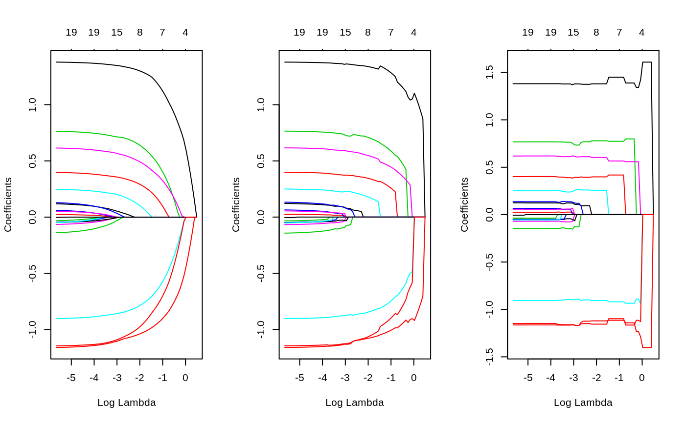
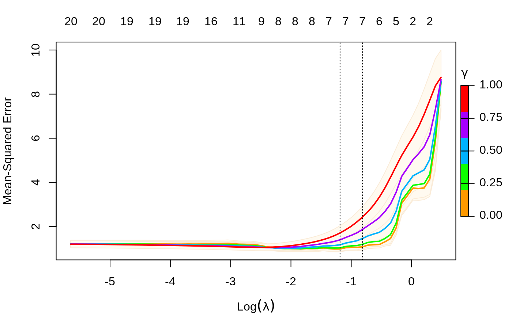
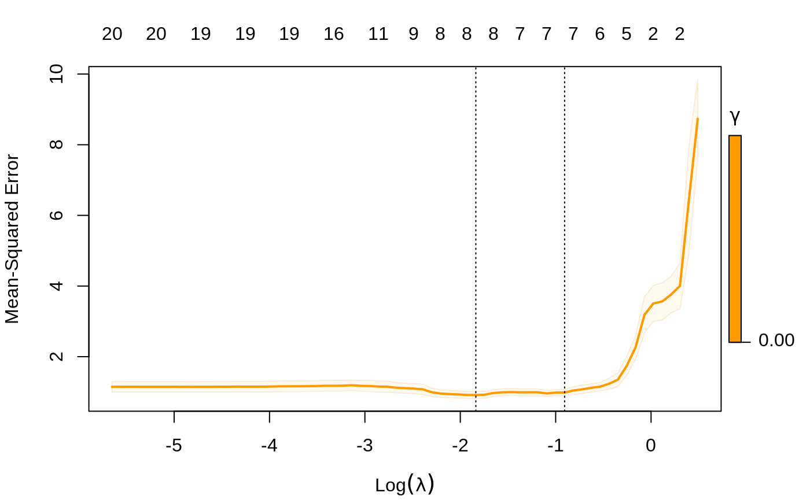
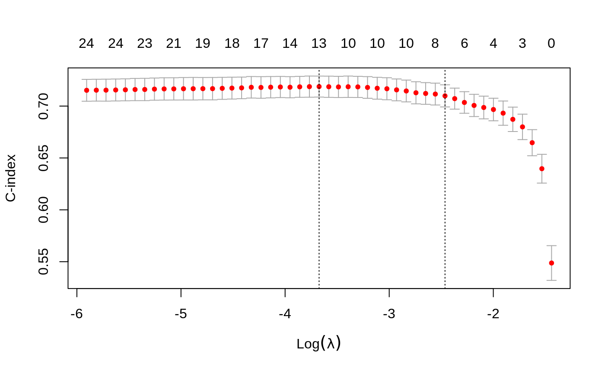
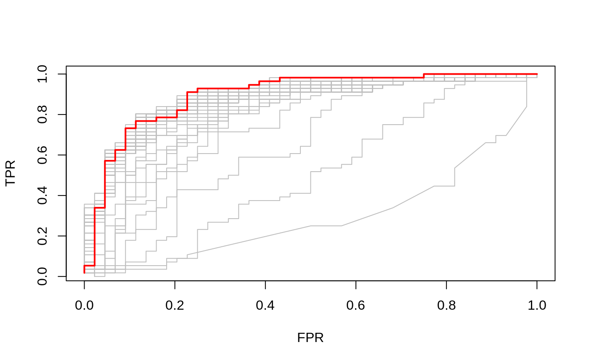

glmnet 3.0relax.RmdIn our vignette “glmnet” we give details for fitting lasso and elastic-net regularized models, for CV and various aspects of glmnet modeling. In this vignette, we highlight some of the new tools and features in the major revision glmnet 3.0.
The main edition is the introduction of the relaxed lasso. The idea is to take a glmnet fitted object, and then for each lambda, refit the variables in the active set without any penalization. This gives the relaxed fit (note, there have been other definitions of a relaxed fit, but this is the one we prefer). This could of course be done for elastic net fits as well as lasso. However, if the number of variables gets too close to the sample size N, the relaxed path will be truncated. Furthermore, for binomial and other nonlinear GLMs convergence can be an issue with our current implementation if the number of variables is too large, and perversely if the relaxed fit is too strong.
Suppose the glmnet fitted linear predictor at \(\lambda\) is \(\hat\eta_\lambda(x)\) and the relaxed version is \(\tilde \eta_\lambda(x)\). We also allow for shrinkage between the two: \[\tilde \eta_{\lambda,\gamma}=(1-\gamma)\tilde
\eta_\lambda(x)+\gamma\hat\eta_\lambda(x).\] \(\gamma\in[0,1]\) is an additional tuning parameter which can be selected by cross validation.
The debiasing will potentially improve prediction performance, and CV will typically select a model with a smaller number of variables. This procedure is very competitive with forward-stepwise and best-subset regression, and has a considerable speed advantage when the number of variables is large. This is especially true for best-subset, but even so for forward stepwise. The latter has to plod through the variables one-at-a-time, while glmnet will just plunge in and find a good active set.
Further details may be found in Friedman, Hastie, and Tibshirani (2010), Simon et al. (2011), Tibshirani et al. (2012), Simon, Friedman, and Hastie (2013) and Hastie, Tibshirani, and Tibshirani (2017).
To get things going, we show the most basic use. We use the same data used in the glmnet vignette.
## Loading required package: Matrix## Loaded glmnet 3.0-1##
## Call: glmnet(x = x, y = y, relax = TRUE)
## Relaxed
##
## Df %Dev %Dev R Lambda
## 1 0 0.00000 0.0000 1.63100
## 2 2 0.05528 0.5890 1.48600
## 3 2 0.14590 0.5890 1.35400
## 4 2 0.22110 0.5890 1.23400
## 5 2 0.28360 0.5890 1.12400
## 6 2 0.33540 0.5890 1.02400
## 7 4 0.39040 0.7656 0.93320
## 8 5 0.45600 0.8059 0.85030
## 9 5 0.51540 0.8059 0.77470
## 10 6 0.57350 0.8799 0.70590
## 11 6 0.62550 0.8799 0.64320
## 12 6 0.66870 0.8799 0.58610
## 13 6 0.70460 0.8799 0.53400
## 14 6 0.73440 0.8799 0.48660
## 15 7 0.76210 0.9010 0.44330
## 16 7 0.78570 0.9010 0.40400
## 17 7 0.80530 0.9010 0.36810
## 18 7 0.82150 0.9010 0.33540
## 19 7 0.83500 0.9010 0.30560
## 20 7 0.84620 0.9010 0.27840
## 21 7 0.85550 0.9010 0.25370
## 22 7 0.86330 0.9010 0.23120
## 23 8 0.87060 0.9077 0.21060
## 24 8 0.87690 0.9077 0.19190
## 25 8 0.88210 0.9077 0.17490
## 26 8 0.88650 0.9077 0.15930
## 27 8 0.89010 0.9077 0.14520
## 28 8 0.89310 0.9077 0.13230
## 29 8 0.89560 0.9077 0.12050
## 30 8 0.89760 0.9077 0.10980
## 31 9 0.89940 0.9087 0.10010
## 32 9 0.90100 0.9087 0.09117
## 33 9 0.90230 0.9087 0.08307
## 34 9 0.90340 0.9087 0.07569
## 35 10 0.90430 0.9096 0.06897
## 36 11 0.90530 0.9109 0.06284
## 37 11 0.90620 0.9109 0.05726
## 38 12 0.90700 0.9113 0.05217
## 39 15 0.90780 0.9123 0.04754
## 40 16 0.90860 0.9126 0.04331
## 41 16 0.90930 0.9126 0.03947
## 42 16 0.90980 0.9126 0.03596
## 43 17 0.91030 0.9128 0.03277
## 44 17 0.91070 0.9128 0.02985
## 45 18 0.91110 0.9131 0.02720
## 46 18 0.91140 0.9131 0.02479
## 47 19 0.91170 0.9132 0.02258
## 48 19 0.91200 0.9132 0.02058
## 49 19 0.91220 0.9132 0.01875
## 50 19 0.91240 0.9132 0.01708
## 51 19 0.91250 0.9132 0.01557
## 52 19 0.91260 0.9132 0.01418
## 53 19 0.91270 0.9132 0.01292
## 54 19 0.91280 0.9132 0.01178
## 55 19 0.91290 0.9132 0.01073
## 56 19 0.91290 0.9132 0.00978
## 57 19 0.91300 0.9132 0.00891
## 58 19 0.91300 0.9132 0.00812
## 59 19 0.91310 0.9132 0.00740
## 60 19 0.91310 0.9132 0.00674
## 61 19 0.91310 0.9132 0.00614
## 62 20 0.91310 0.9132 0.00559
## 63 20 0.91310 0.9132 0.00510
## 64 20 0.91310 0.9132 0.00464
## 65 20 0.91320 0.9132 0.00423
## 66 20 0.91320 0.9132 0.00386
## 67 20 0.91320 0.9132 0.00351There is an extra column %Dev R where the R stands for “relaxed”, which is the percent deviance explained by the relaxed fit. This is always higher than its neighboring column, which is the same for the penalized fit (on the training data).
The fit object is class relaxed, which inherits from class glmnet. One can plot it, with additional flexibility.

So again, gamma=1 is the traditional glmnet fit, while gamma=0 is the unpenalized fit, and gamma=0.5 is a mixture of the two (at the coefficient level, and hence also the linear predictors).
We can also select gamma using cv.glmnet, which by default uses the 5 values c(0, 0.25, 0.5, 0.75, 1).

The plot command has an se.bands option if you don’t like the default shading of these bands.
Just like before, you can make predictions from a CV object, and it uses the selected values for lambda and gamma.
A new feature in glmnet is a print method for cv.glmnet and a cv.relaxed object.
##
## Call: cv.glmnet(x = x, y = y, relax = TRUE)
##
## Measure: Mean-Squared Error
##
## Gamma Lambda Measure SE Nonzero
## min 0 0.3056 0.9831 0.1294 7
## 1se 0 0.4433 1.0787 0.1482 7Although glmnet has a relax option, you can created a relaxed version by post-processing a glmnet object.
This will rarely need to be done; one use case is if the original fit took a long time, and the user wanted to avoid refitting it. Note that in the call the arguments are named, since they are passed in via the ... argument to relax.glmnet.
Needless to say, any of the families fit by glmnet can also be fit with the relaxed option.
As mentioned, a relaxed object is also a glmnet object. Apart from the class modification, it has an additional componet named relaxed which is itself a glmnet object, but with the relaxed coefficients. The default behavior of extractor functions like predict and coef, as well as plot will be to present results from the glmnet fit, unless a value of gamma is given different from the default value gamma=1 (see the plots above). The print method gives additional info on the relaxed fit.
Likewise, a cv.relaxed object inherits from class cv.glmnet. Here the predict method by default uses the optimal relaxed fit; if predictions from the CV-optimal original glmnet fit are desired, one can directly use predict.cv.glmnet. Similarly for the print command, which we illustrate here.
##
## Call: cv.glmnet(x = x, y = y, relax = TRUE)
##
## Measure: Mean-Squared Error
##
## Gamma Lambda Measure SE Nonzero
## min 0 0.3056 0.9831 0.1294 7
## 1se 0 0.4433 1.0787 0.1482 7##
## Call: cv.glmnet(x = x, y = y, relax = TRUE)
##
## Measure: Mean-Squared Error
##
## Lambda Measure SE Nonzero
## min 0.08307 1.054 0.1513 9
## 1se 0.15933 1.192 0.2042 8glmnet itself is used to fit the relaxed fits, by using a single value of zero for lambda. However, for nonlinear models such as binomial, multinomial and poisson, there can be convergence issues. This is because glmnet does not do stepsize optimization, rather relying on the pathwise fit to stay in the “quadratic” zone of the log likelihood. We have an optional path=TRUE option for relax.glmnet, which actually fits a regurized path toward the lambda=0 solution, and thus avoids the issue. The default is path=FALSE since this option adds to the computing time.
One use case for a relaxed fit is as a faster version of forward stepwise regression. With a large number p of variables, forward-stepwise regression can be tedious. Lasso on the other hand, because of its convexity, can plunge in and identify good candidate sets of variables over 100 values of lambda, even though p could be in the 10s of thousands. In a case like this, one can have cv.glmnet do the selection.

Notice that we only allow gamma=0, so in this case we are not considering the blended fits.
We finally have a progress bar for glmnet and cv.glmnet. Ever run a job on a big dataset, and wonder how long it will take? Now you can use the trace.it = TRUE argument to these functions.
##
|================================== |65%
Here we abbreviated the argument to trace. This display changes in place as the fit is produced. Also very helpful with cv.glmnet
##
Training
|=============================================| 100%
Fold: 1/10
|=============================================| 100%
Fold: 2/10
|=============================================| 100%
Fold: 3/10
|=============================================| 100%
Fold: 4/10
|=============================================| 100%
Fold: 5/10
|=============================================| 100%
Fold: 6/10
|============================= | 70%
Tracing of the folds works a little differently when distributed computing is used.
Here the trace argument should be used in each call to glmnet or cv.glmnet. One can set this option session wide via a call to glmnet.control with its new itrace argument:
To reset it, one makes a similar call and sets itrace=0.
We have a new performance measure for the Cox model: the Harrel C index. This is like the AUC measure of concordance for survival data, but only considers comparable pairs. Pure concordance would record the fraction of pairs for which the order of the death times agree with the order of the predicted risk. But with survival data, if an observation is right censored at a time before another observation’s death time, they are not comparable.

Once we have fit a series of models using glmnet, we often assess their performance on a set of evaluation or test data. We usually go through the process of building a prediction matrix, and then deciding on the measure, and computing the values for a series of values for lambda and now gamma. Here we provide three functions for making these tasks easier.
The function assess.glmnet computes the same performance measures produced by cv.glmnet, but on a validation or test dataset.
data(BinomialExample)
itrain=1:70
fit=glmnet(x[itrain,],y[itrain],family="binomial",nlambda=20)
assess.glmnet(fit,newx=x[-itrain,],newy=y[-itrain])## $deviance
## s0 s1 s2 s3 s4 s5 s6 s7
## 1.3877348 1.2319096 1.0555731 0.9020831 0.8564873 0.8716707 0.9415079 1.0669161
## s8 s9 s10 s11 s12 s13 s14 s15
## 1.3180742 1.6236987 1.9513754 2.2105092 2.4922882 2.7629164 2.9792768 3.1275960
## s16 s17 s18
## 3.2759824 3.4240188 3.5722750
## attr(,"measure")
## [1] "Binomial Deviance"
##
## $class
## s0 s1 s2 s3 s4 s5 s6 s7
## 0.4666667 0.3333333 0.2000000 0.1666667 0.1666667 0.1666667 0.2000000 0.2000000
## s8 s9 s10 s11 s12 s13 s14 s15
## 0.2000000 0.2333333 0.2333333 0.2000000 0.2000000 0.2000000 0.1666667 0.1666667
## s16 s17 s18
## 0.1666667 0.1666667 0.1666667
## attr(,"measure")
## [1] "Misclassification Error"
##
## $auc
## [1] 0.7276786 0.7991071 0.8437500 0.8928571 0.9017857 0.9062500 0.8973214
## [8] 0.8928571 0.8705357 0.8526786 0.8392857 0.8214286 0.8214286 0.8169643
## [15] 0.8169643 0.8169643 0.8125000 0.8125000 0.8080357
## attr(,"measure")
## [1] "AUC"
##
## $mse
## s0 s1 s2 s3 s4 s5 s6 s7
## 0.5006803 0.4265596 0.3477022 0.2836649 0.2605716 0.2537474 0.2701316 0.2937508
## s8 s9 s10 s11 s12 s13 s14 s15
## 0.3324507 0.3610377 0.3651420 0.3570217 0.3549473 0.3535171 0.3514806 0.3496168
## s16 s17 s18
## 0.3480045 0.3467192 0.3455224
## attr(,"measure")
## [1] "Mean-Squared Error"
##
## $mae
## s0 s1 s2 s3 s4 s5 s6 s7
## 0.9904762 0.8979473 0.7675067 0.6352868 0.5533314 0.5012508 0.4736140 0.4565569
## s8 s9 s10 s11 s12 s13 s14 s15
## 0.4683982 0.4715432 0.4538161 0.4305615 0.4135260 0.4026998 0.3941315 0.3871481
## s16 s17 s18
## 0.3816993 0.3776846 0.3744014
## attr(,"measure")
## [1] "Mean Absolute Error"This produces a list with all the measures suitable for a binomial model, computed for the entire sequence of lambdas in the fit object. Here the function identifies the model family from the fit object.
A second use case builds the prediction matrix first
Here we have to provide the family as an argument; the results (not shown) are the same. Users can see the various measures suitable for each family via
## $gaussian
## [1] "mse" "mae"
##
## $binomial
## [1] "deviance" "class" "auc" "mse" "mae"
##
## $poisson
## [1] "deviance" "mse" "mae"
##
## $cox
## [1] "deviance" "C"
##
## $multinomial
## [1] "deviance" "class" "mse" "mae"
##
## $mgaussian
## [1] "mse" "mae"The assess function can also take the result of cv.glmnet as input. In this case the predictions are made at the optimal values for the parameter(s).
cfit=cv.glmnet(x[itrain,],y[itrain],family="binomial", nlambda = 30)
assess.glmnet(cfit,newx=x[-itrain,],newy=y[-itrain])## $deviance
## 1
## 0.9482246
## attr(,"measure")
## [1] "Binomial Deviance"
##
## $class
## 1
## 0.2
## attr(,"measure")
## [1] "Misclassification Error"
##
## $auc
## [1] 0.875
## attr(,"measure")
## [1] "AUC"
##
## $mse
## 1
## 0.3028376
## attr(,"measure")
## [1] "Mean-Squared Error"
##
## $mae
## 1
## 0.6797343
## attr(,"measure")
## [1] "Mean Absolute Error"This used the default value of s=lambda.1se, just like predict would have done. Users can provide additional arguments that get passed on to predict:
## $deviance
## 1
## 0.877155
## attr(,"measure")
## [1] "Binomial Deviance"
##
## $class
## 1
## 0.1666667
## attr(,"measure")
## [1] "Misclassification Error"
##
## $auc
## [1] 0.8973214
## attr(,"measure")
## [1] "AUC"
##
## $mse
## 1
## 0.273071
## attr(,"measure")
## [1] "Mean-Squared Error"
##
## $mae
## 1
## 0.6069619
## attr(,"measure")
## [1] "Mean Absolute Error"One interesting use case is to get the results of CV using other measures, via the keep argument. In this case the fit.preval object is a matrix of prevalidated predictions made using the folds foldid
cfit=cv.glmnet(x,y,family="binomial",keep=TRUE, nlambda = 30)
assess.glmnet(cfit$fit.preval,newy=y,family="binomial")## $deviance
## s0 s1 s2 s3 s4 s5 s6 s7
## 1.3876960 1.2767978 1.1836116 1.1011943 1.0017412 0.9008072 0.8297499 0.7942998
## s8 s9 s10 s11 s12 s13 s14 s15
## 0.7924199 0.8187557 0.8735849 0.9551737 1.0670542 1.2134478 1.3939337 1.5919928
## s16 s17 s18 s19 s20 s21 s22 s23
## 1.7913609 1.9602808 2.0982748 2.2212444 2.3371396 2.4542577 2.5547655 2.6520462
## s24 s25 s26 s27 s28 s29
## 2.7377531 2.8153457 2.8760356 2.9101258 2.9319111 2.9431985
## attr(,"measure")
## [1] "Binomial Deviance"
##
## $class
## s0 s1 s2 s3 s4 s5 s6 s7 s8 s9 s10 s11 s12 s13 s14 s15
## 0.44 0.31 0.26 0.27 0.20 0.18 0.18 0.14 0.14 0.15 0.15 0.16 0.18 0.20 0.20 0.19
## s16 s17 s18 s19 s20 s21 s22 s23 s24 s25 s26 s27 s28 s29
## 0.19 0.19 0.19 0.19 0.19 0.19 0.19 0.19 0.19 0.20 0.20 0.20 0.20 0.20
## attr(,"measure")
## [1] "Misclassification Error"
##
## $auc
## [1] 0.3814935 0.7658279 0.7844968 0.8157468 0.8474026 0.8806818 0.8969156
## [8] 0.9025974 0.9042208 0.9042208 0.8981331 0.8952922 0.8900162 0.8879870
## [15] 0.8859578 0.8871753 0.8875812 0.8883929 0.8871753 0.8871753 0.8863636
## [22] 0.8867695 0.8867695 0.8859578 0.8863636 0.8863636 0.8859578 0.8863636
## [29] 0.8859578 0.8863636
## attr(,"measure")
## [1] "AUC"
##
## $mse
## s0 s1 s2 s3 s4 s5 s6 s7
## 0.5006089 0.4459749 0.4018087 0.3649280 0.3239928 0.2837591 0.2559092 0.2395268
## s8 s9 s10 s11 s12 s13 s14 s15
## 0.2333956 0.2323191 0.2356759 0.2449102 0.2610604 0.2823075 0.3003517 0.3106865
## s16 s17 s18 s19 s20 s21 s22 s23
## 0.3169382 0.3219988 0.3266383 0.3312287 0.3356633 0.3397754 0.3435746 0.3470613
## s24 s25 s26 s27 s28 s29
## 0.3502324 0.3530813 0.3557247 0.3581078 0.3599617 0.3594919
## attr(,"measure")
## [1] "Mean-Squared Error"
##
## $mae
## s0 s1 s2 s3 s4 s5 s6 s7
## 0.9926408 0.9282982 0.8600168 0.7899903 0.7076536 0.6231577 0.5553294 0.5053834
## s8 s9 s10 s11 s12 s13 s14 s15
## 0.4698556 0.4398822 0.4162609 0.4021812 0.3969930 0.3958959 0.3951095 0.3919078
## s16 s17 s18 s19 s20 s21 s22 s23
## 0.3878858 0.3851300 0.3838986 0.3837975 0.3842131 0.3845868 0.3849673 0.3853818
## s24 s25 s26 s27 s28 s29
## 0.3857889 0.3861738 0.3867311 0.3873381 0.3877004 0.3867967
## attr(,"measure")
## [1] "Mean Absolute Error"Users can verify that the first measure here deviance is identical to the component cvm on the cfit object.
In the special case of binomial models, users often would like to see the ROC curve for validation or test data. Here the function roc.glmnet provides the goodies. Its first argument is as in assess.glmnet. Here we illustrate one use case, using the prevlidated CV fit as before.
cfit=cv.glmnet(x,y,family="binomial", type.measure="auc", keep=TRUE)
rocs=roc.glmnet(cfit$fit.preval,newy=y)
which=match(cfit$lambda.min,cfit$lambda)
plot(rocs[[which]],type="l")
nopr=sapply(rocs,lines,col="grey")
lines(rocs[[which]],lwd=2,col="red")
In this case roc.glmnet returns a list of cross-validated ROC data, one for each model along the path. In the third line we identify the CV winner. Then we plot all the curves in grey, and the winner in red.
For binomial and multinomial models, we often which to examine the classification performance on new data. The function confusion.glmnet will do that.
data(MultinomialExample)
set.seed(101)
itrain=sample(1:500,400,replace=FALSE)
cfit=cv.glmnet(x[itrain,],y[itrain],family="multinomial")
cnf=confusion.glmnet(cfit,newx=x[-itrain,],newy=y[-itrain])
print(cnf)## True
## Predicted 1 2 3 Total
## 1 13 6 4 23
## 2 7 25 5 37
## 3 4 3 33 40
## Total 24 34 42 100
##
## Percent Correct: 0.71It produces a table of class confusion.table which inherits from calss table, and we also provide a print method.
The first argument to confusion.glmnet should be either a glmnet object, or a cv.glmnet object, from which predictions can be made, or a matrix/array of predictions, such as the kept fit.predval object from cv.glmnet.
In the second case we need to specify the family, otherwise confusion can exist between binomial and multinomial prediction matrices. Here we show a multinomial example
cfit=cv.glmnet(x,y,family="multinomial",type="class",keep=TRUE)
cnf=confusion.glmnet(cfit$fit.preval,newy=y,family="multinomial")
which=match(cfit$lambda.min,cfit$lambda)
print(cnf[[which]])## True
## Predicted 1 2 3 Total
## 1 76 22 14 112
## 2 39 129 23 191
## 3 27 23 147 197
## Total 142 174 184 500
##
## Percent Correct: 0.704Since the fit.preval object has predictions for the whole path, the result of confusion.glmnet here is a list of confusion tables. We identify and print the one corresponding to the minimum classification error.
We include a function bigGlm for fitting a single GLM model (unpenalized), but allowing all the options of glmnet. In other words, coefficient upper and/or lower bounds and sparse x matrices. This is not too much more than fitting a model with a single value of lambda=0 (with some protection from edge cases). There is also a predict and print method.
##
## Call: bigGlm(x = x, y = y, family = "binomial", lower.limits = -1)
##
## Df %Dev Lambda
## 1 30 0.7757 0We have created a function makeX that makes it easy to create the model matrix x needed as input to glmnet. It takes as input a data frame, which can contain vectors, matrices and factors. Some of the features are
sparse option returns a matrix in column-sparse format. This is useful if the data are large, and factors have many levels.Two dataframes can be provided, train and test. This ensures the factor levels correspond, and also imputes missing data in the test data from means in the training data.
We start with a simple case with some factors.
set.seed(101)
X = matrix(rnorm(20),10,2)
X3=sample(letters[1:3],10,replace=TRUE)
X4=sample(LETTERS[1:3],10,replace=TRUE)
df=data.frame(X,X3,X4)
makeX(df)## X1 X2 X3a X3b X3c X4A X4B X4C
## 1 -0.3260365 0.5264481 0 1 0 0 0 1
## 2 0.5524619 -0.7948444 0 0 1 0 1 0
## 3 -0.6749438 1.4277555 1 0 0 0 1 0
## 4 0.2143595 -1.4668197 1 0 0 1 0 0
## 5 0.3107692 -0.2366834 1 0 0 0 1 0
## 6 1.1739663 -0.1933380 0 1 0 1 0 0
## 7 0.6187899 -0.8497547 1 0 0 1 0 0
## 8 -0.1127343 0.0584655 0 1 0 1 0 0
## 9 0.9170283 -0.8176704 0 1 0 0 0 1
## 10 -0.2232594 -2.0503078 0 0 1 0 0 1Or if a sparse output was desired:
## 10 x 8 sparse Matrix of class "dgCMatrix"
## X1 X2 X3a X3b X3c X4A X4B X4C
## 1 -0.3260365 0.5264481 . 1 . . . 1
## 2 0.5524619 -0.7948444 . . 1 . 1 .
## 3 -0.6749438 1.4277555 1 . . . 1 .
## 4 0.2143595 -1.4668197 1 . . 1 . .
## 5 0.3107692 -0.2366834 1 . . . 1 .
## 6 1.1739663 -0.1933380 . 1 . 1 . .
## 7 0.6187899 -0.8497547 1 . . 1 . .
## 8 -0.1127343 0.0584655 . 1 . 1 . .
## 9 0.9170283 -0.8176704 . 1 . . . 1
## 10 -0.2232594 -2.0503078 . . 1 . . 1And now some missing values
## X1 X2 X3na X3nb X3nc X4nA X4nB X4nC
## 1 -0.3260365 0.5264481 0 1 0 0 0 1
## 2 0.5524619 -0.7948444 0 0 1 0 1 0
## 3 NA 1.4277555 1 0 0 0 1 0
## 4 0.2143595 -1.4668197 1 0 0 1 0 0
## 5 0.3107692 NA 1 0 0 0 1 0
## 6 1.1739663 -0.1933380 NA NA NA 1 0 0
## 7 0.6187899 -0.8497547 1 0 0 1 0 0
## 8 -0.1127343 0.0584655 0 1 0 1 0 0
## 9 0.9170283 -0.8176704 0 1 0 NA NA NA
## 10 -0.2232594 -2.0503078 0 0 1 0 0 1which we can replace with column-mean imputations (and make sparse, if we like)
## 10 x 8 sparse Matrix of class "dgCMatrix"
## X1 X2 X3na X3nb X3nc X4nA X4nB
## 1 -0.3260365 0.5264481 . 1.0000000 . . .
## 2 0.5524619 -0.7948444 . . 1.0000000 . 1.0000000
## 3 0.3472605 1.4277555 1.0000000 . . . 1.0000000
## 4 0.2143595 -1.4668197 1.0000000 . . 1.0000000 .
## 5 0.3107692 -0.4622295 1.0000000 . . . 1.0000000
## 6 1.1739663 -0.1933380 0.4444444 0.3333333 0.2222222 1.0000000 .
## 7 0.6187899 -0.8497547 1.0000000 . . 1.0000000 .
## 8 -0.1127343 0.0584655 . 1.0000000 . 1.0000000 .
## 9 0.9170283 -0.8176704 . 1.0000000 . 0.4444444 0.3333333
## 10 -0.2232594 -2.0503078 . . 1.0000000 . .
## X4nC
## 1 1.0000000
## 2 .
## 3 .
## 4 .
## 5 .
## 6 .
## 7 .
## 8 .
## 9 0.2222222
## 10 1.0000000Finally if a test set is available as well
X = matrix(rnorm(10),5,2)
X3=sample(letters[1:3],5,replace=TRUE)
X4=sample(LETTERS[1:3],5,replace=TRUE)
Xn=X
Xn[3,1]=NA;Xn[5,2]=NA
X3n=X3;
X3n[1]=NA
X4n=X4
X4n[2]=NA
dftn=data.frame(Xn,X3n,X4n)
makeX(dfn,dftn,na.impute=TRUE, sparse=TRUE)## $x
## 10 x 8 sparse Matrix of class "dgCMatrix"
## X1 X2 X3na X3nb X3nc X4nA X4nB
## 1 -0.3260365 0.5264481 . 1.0000000 . . .
## 2 0.5524619 -0.7948444 . . 1.0000000 . 1.0000000
## 3 0.3472605 1.4277555 1.0000000 . . . 1.0000000
## 4 0.2143595 -1.4668197 1.0000000 . . 1.0000000 .
## 5 0.3107692 -0.4622295 1.0000000 . . . 1.0000000
## 6 1.1739663 -0.1933380 0.4444444 0.3333333 0.2222222 1.0000000 .
## 7 0.6187899 -0.8497547 1.0000000 . . 1.0000000 .
## 8 -0.1127343 0.0584655 . 1.0000000 . 1.0000000 .
## 9 0.9170283 -0.8176704 . 1.0000000 . 0.4444444 0.3333333
## 10 -0.2232594 -2.0503078 . . 1.0000000 . .
## X4nC
## 1 1.0000000
## 2 .
## 3 .
## 4 .
## 5 .
## 6 .
## 7 .
## 8 .
## 9 0.2222222
## 10 1.0000000
##
## $xtest
## 5 x 8 sparse Matrix of class "dgCMatrix"
## X1 X2 X3na X3nb X3nc X4nA X4nB
## 11 -0.5098443 -0.7556130 0.4444444 0.3333333 0.2222222 . 1.0000000
## 12 1.5661805 1.7384118 . . 1.0000000 0.4444444 0.3333333
## 13 0.3472605 0.7580952 . 1.0000000 . . 1.0000000
## 14 1.0059925 2.1152294 1.0000000 . . 1.0000000 .
## 15 -0.5829222 -0.4622295 . 1.0000000 . . 1.0000000
## X4nC
## 11 .
## 12 0.2222222
## 13 .
## 14 .
## 15 .Friedman, Jerome, Trevor Hastie, and Robert Tibshirani. 2010. “Regularization Paths for Generalized Linear Models via Coordinate Descent.” Journal of Statistical Software, Articles 33 (1): 1–22. https://doi.org/10.18637/jss.v033.i01.
Hastie, Trevor, Robert Tibshirani, and Ryan Tibshirani. 2017. “Extended Comparisons of Best Subset Selection, Forward Stepwise Selection, and the Lasso.”
Simon, Noah, Jerome Friedman, and Trevor Hastie. 2013. “A Blockwise Descent Algorithm for Group-Penalized Multiresponse and Multinomial Regression.”
Simon, Noah, Jerome Friedman, Trevor Hastie, and Robert Tibshirani. 2011. “Regularization Paths for Cox’s Proportional Hazards Model via Coordinate Descent.” Journal of Statistical Software, Articles 39 (5): 1–13. https://doi.org/10.18637/jss.v039.i05.
Tibshirani, Robert, Jacob Bien, Jerome Friedman, Trevor Hastie, Noah Simon, Jonathan Taylor, and Ryan Tibshirani. 2012. “Strong Rules for Discarding Predictors in Lasso-Type Problems.” Journal of the Royal Statistical Society: Series B (Statistical Methodology) 74 (2): 245–66. https://doi.org/10.1111/j.1467-9868.2011.01004.x.